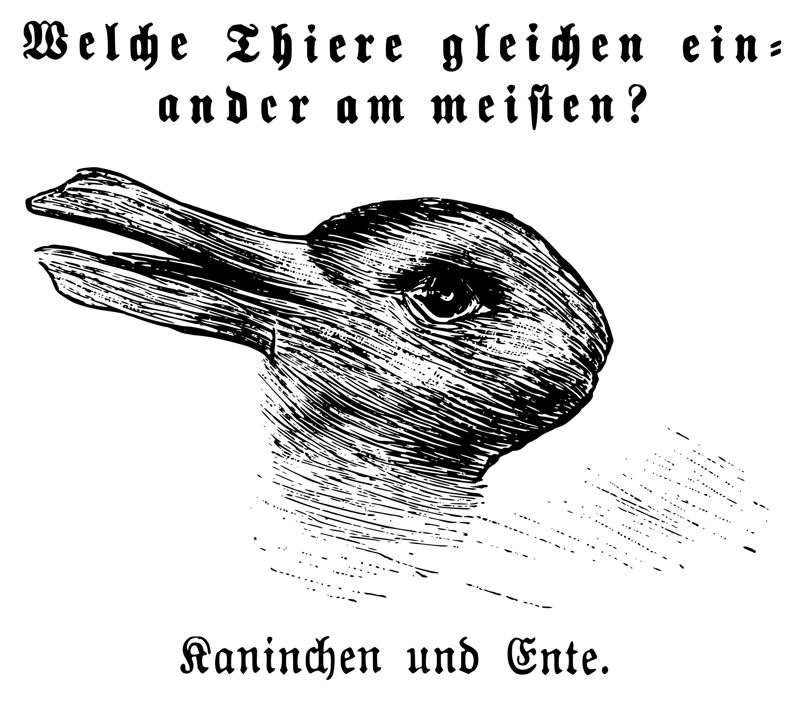

NPRG077
TinyML: A tiny functional
programming language interpreter
Tomáš Petříček, 309 (3rd floor)
petricek@d3s.mff.cuni.cz
https://tomasp.net | @tomaspetricek
https://d3s.mff.cuni.cz/teaching/nprg077


Two sides of this lecture
Introducing the F# language
- Some practical information
- Enough so that you can use it!
- Some important things omitted
Introducing ML-style languages
- Background for our TinyML
- Basic features & principles
- Some weird corner cases!
The F# language
What you need to know
Getting started with F#

F# and .NET runtime
- .NET SDK for Mac, Linux, Windows
- OSS with .NET Foundation since 2017
- https://dotnet.microsoft.com
F# editors and tools
- Microsoft Visual Studio (Win only)
- JetBrains Rider (Win, Linux, Mac)
- VS Code with Ionide (Win, Linux, Mac)
- https://ionide.io
F# project types

Script-based development
- Write code in
.fsxfile - Run using F# Interactive REPL
- Can select & run out-of-order!
Project-based development
- Project
.fsprojwith.fssources - Standard build and run workflow
- Live reload with Fable and JavaScript
F# project structure

Declaration order matters!
- Helper function and types
- Types defining domain model
- Operations for working with it
- User interface
How to organize F# projects
- Namespaces or modules
- Type declarations
- Functions (inside modules)
Data type declarations in F#
-
Tuples and records
Store multiple values of different types -
Discriminated unions
Represent one of multiple possible options -
Collections, lists and maps
Multiple values of the same type -
Recursive declarations
Type that can include values of itself -
Type aliases
Shorthand for a type with a long name
Demo
Simple expression evaluator
Selected advanced features

Lists and maps
- Immutable collections
- Linked (cons) lists with head/tail
- Key-value maps with lookup
Recursion and laziness
- Recursive functions using
let rec - Works also for values, but beware!
Lazy<T>to represent lazy values
Demo
Maps, lazy values, recursion
TinyML
Interpreter structure
type Value =
| Number of int
type Expression =
| Constant of int
| Binary of
string *
Expression *
Expression
val evaluate :
Expression -> Value
Basic interpreter structure (1/2)
Expression is the source
code that user writes
Value is what we
get as the result
evaluate takes expression
and returns value
type Value =
| ValNum of int
type Expression =
| Constant of int
| Binary of
string *
Expression *
Expression
| Variable of string
type VariableContext =
Map<string, Value>
val evaluate :
Expression -> VariableContext -> Value
Basic interpreter structure (2/2)
Adding variables and variable context
Variable can store only values (call-by-value)
evaluate takes context
Demo
Adding values and variables
TinyML
How ML languages work
(* Functions *)
let f = (fun x -> 10 + x)
f 32
(* Tuples *)
let t = (1, "hi")
fst t
snd t
(* Unions *)
let c1 = Case1(10)
let c2 = Case2(32)
match c1 with
| Case1 n -> n + 32
| Case2 n -> n + 10
Language features of TinyML (1/2)
Functions but only with single argument
Tuples of two element with getters
Unions without tag name with two cases
(* Let bindings *)
let x = 10 in x * 32
(* Let desugaring *)
(fun x -> x * 32) 10
(* Conditionals *)
if e then 10 else 32
(* Both are expressions *)
1 + (if e then 41 else 1)
1 + (let x = 1 in x + x)
(* Currying *)
let add = fun a -> fun b -> a + b
in (add 10) 32
Language features of TinyML (2/2)
let is a syntactic sugar
Everything (if and let too) is an expression
Functions that return functions (currying) if you need multiple parameters
TinyML
A bit of theory

Variable scoping
Lexical
Based on static block structure in code
Function value needs to capture variables (closure)
Dynamic
Based on dynamic evaluation structure

Operational semantics
Formally specify how expression evaluate
Substitution-based
We do not need variable context!

Call-by-name vs. call-by-value
Call-by-value (strict)
Evaluates function arguments first (ML)
Call-by-name (lazy)
Evaluates arguments when needed (Haskell)
Lab overview
TinyML interpreter step-by-step
TinyML - Basic tasks
-
Simple numerical evaluator as the starting point
This has already been done for you :-) -
Add unary operators (-) and conditional
We only have numbers, so treat1astrue -
Functions and application
Tricky! Closure needs to capture variables! -
Let binding as syntactic sugar
Evaluateletby treating it as apply/lambda -
Add a simple data type - tuples
New value, constructor and destructor
TinyML - Bonus & super tasks
-
Add more data types - unions
New value, constructor and destructor (match) -
Add support for recursion
NeedsLazy<Value>in variable context to work -
Add unit and create a list value
Case1(Const(1), Case1(Const(2), Case2(Unit))) -
Implement call-by-name semantics
Change variable context to store expressions -
Implement evaluation by substitution
Toy approach, but you learn the semantics
Closing
A tiny functional language interpreter
Conclusions
A tiny functional programming language interpreter
- Distinguishing
ValueandExpression - Recursive function with variable scope
- Call-by-value and lexical variable scoping!
- Nice constructor and destructor symmetry
Tomáš Petříček, 309 (3rd floor)
petricek@d3s.mff.cuni.cz
https://tomasp.net | @tomaspetricek
https://d3s.mff.cuni.cz/teaching/nprg077